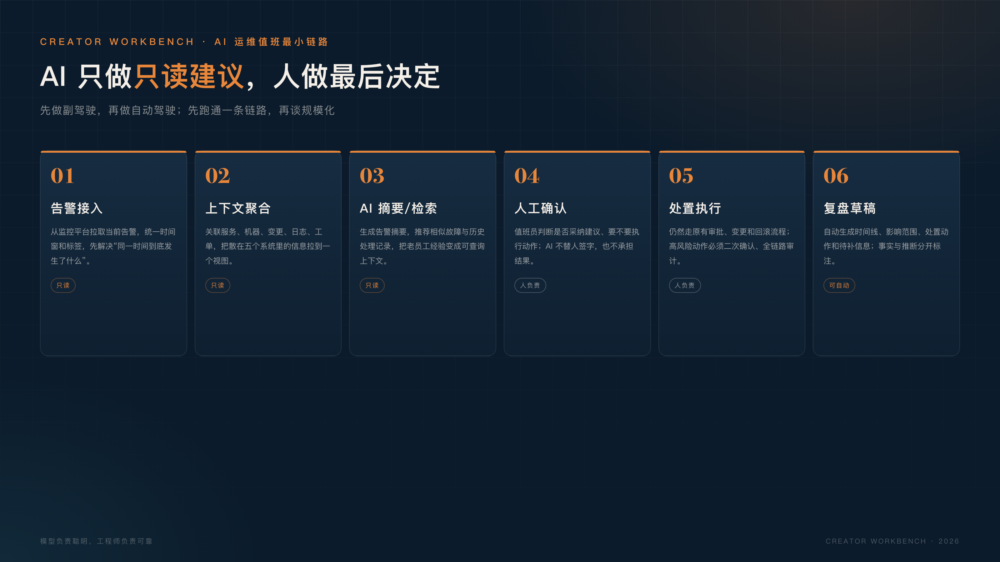

运维 AI 的价值，不是让 AI 替你值班。
是让你在值班时，少被重复信息淹没。
假设一个很典型的运维团队。
凌晨 2 点，监控平台连续响了 17 条告警：数据库连接数高、接口超时、某台机器 CPU 打满、磁盘 IO 异常、下游服务响应变慢。
值班同学打开电脑，先看监控，再翻日志，再去 CMDB 查机器归属，最后在群里问一句：“谁最近动过这个服务？”
半小时过去，故障可能已经恢复，也可能还在查。
最尴尬的是：事后看，可能只是一个数据库连接池配置问题；但在当时，17 条告警和五个系统把真正的原因埋住了。
这是运维值班最真实的痛点：不是没有数据，而是数据散在五个系统里；不是没有经验，而是经验只在老员工脑子里。
如果我来把 AI 接进运维值班，我不会一上来做“自动处置”。我会先做三件事。
AI 最先应该接的，不是执行，而是降噪。
把同一时间窗口内的多条告警聚合起来，输出一段结构化摘要：
这一步的价值很直接：值班同学不用一上来就淹没在 17 条告警里，而是先看到“一个可能的问题”。
AI 不替你做判断，它先帮你把问题整理成一个可以判断的形状。
要做到这一点，AI 需要的不只是告警文本，还需要服务拓扑、变更记录、日志关键字和最近一次相似故障。没有上下文，摘要只是把 17 条告警换成 17 条废话。
很多故障不是第一次发生，只是没人记得上次是怎么处理的。
把历史工单、故障复盘、值班记录、变更记录整理成可检索的库，AI 在告警发生时自动推荐：
注意，这不是让 AI 直接说“按上次的方案处理”。它只是把上下文放到值班员面前，减少“从零开始查”的时间。
经验的价值，不在于存在某个人的脑子里，而在于关键时刻能被调用出来。
这一步的关键不是“大模型多聪明”，而是知识库的质量：工单有没有写根因、复盘有没有写清楚、变更有没有关联服务。垃圾进，垃圾出；在运维场景里，垃圾还会带来错误的安全感。
知识库不用一开始就做“全公司知识库”，先从最近 20 个真实工单开始，够用、够准，比大而全重要。
故障处理完之后，最容易被跳过的一步是复盘。
不是大家不想写，而是处理完已经很累，还要回忆时间线、整理截图、写清楚根因和改进行动。
AI 可以先把草稿写出来：
值班员只需要核对和补充，把“写复盘”从一小时级降到十几分钟级（这是目标，具体效果待验证）。
复盘不是写给领导看的，是写给下一次值班的自己看的。
所以复盘草稿必须保留“待确认”和“证据链接”，而不是让 AI 编一个看起来很完整的结论。值班员要能一眼看出：哪些是事实，哪些是推测。
一个合格的 AI 复盘草稿，应该把“事实”和“推断”分开放，把“待补充”留成显眼的空位。
如果从零开始，我会按这个链路搭第一版：
告警接入 → 上下文聚合 → AI 摘要/检索 → 人工确认 → 处置执行 → 复盘草稿关键点在中间那一步：AI 只做只读建议，不做自动执行。
这条链路里，AI 不碰生产操作，不拿管理员权限，也不替人签字。

落地时可以先从只读接口开始：监控查询、日志检索、工单读取、CMDB 查询。所有写操作仍然走原来的审批和变更流程。
自动处置听起来很酷：AI 检测到问题，自动重启、自动扩容、自动回滚。
但运维的每一个“自动动作”，都意味着一个真实的生产风险：
在没有完整评测、权限隔离、审计和回滚机制之前，自动处置不是效率，是事故放大器。
先做副驾驶，再做自动驾驶。
至少要有四道闸门：只读优先、高风险动作二次确认、全链路审计、随时可停用。四道闸门缺任何一道，都不要把 AI 接进生产执行链路。
如果团队现在连变更记录和告警关联都不完整，先补这两个基础，再谈 AI。否则 AI 只能把“信息不全”包装成“看起来很专业的摘要”。
如果我要验证这件事，会选一个团队、一类告警、一个明确指标：
指标不用多，三个就够：定位时间、人工处理步骤数、复盘完成率。
如果 4 周后定位时间没有改善，先检查上下文聚合是否真的覆盖了值班员需要的判断信息；如果值班员不用，说明摘要没有解决他的问题，而不是“AI 不行”。
试点不要一开始跨三个团队。一个团队、一类告警、一个清晰指标，才能知道到底是哪一步起了作用。
试点结束后只做一个决定：继续、调整场景、还是停止。不要因为“已经投入了”就硬推。
试点期间每天记录一条：今天 AI 帮值班员省了哪一步？如果连续一周写不出来，说明这个场景不值得继续。
误区一：先接自动处置。
自动处置是最后一步，不是第一步。先让 AI 做只读摘要和检索，验证它能不能理解你的系统，再谈执行。
误区二：把知识库当成文档堆。
把所有文档扔进向量库，不等于有了故障知识库。真正有用的是：工单的根因、复盘的动作、变更的关联、告警的时间线。
误区三：用“准确率”验收一切。
运维 AI 的价值不只是答对多少条，更是让值班员少翻几个系统、少问几个人、早几分钟定位。验收指标要和真实动作挂钩。
假设监控同时出现：数据库连接数升高、订单接口超时、两台应用服务器 CPU 打满。
AI 的摘要可能是：
14:03 数据库连接数从 120 升到 480，14:05 订单接口 P99 从 800ms 升到 6s，14:06 两台应用服务器 CPU 达到 95%。三条告警时间接近，可能由同一原因引起。过去 30 分钟有一次订单服务发布；假设样例中约有六成历史相似工单与连接池配置有关。建议先确认发布变更，再检查连接池和慢 SQL。
这段摘要没有替值班员做决定，但它把“先看什么”说清楚了。
值班员接下来可以自己判断：回滚发布、调整连接池，还是继续观察。每一步仍然由人确认。
AI 在运维里最大的价值，不是取代值班员。
是让值班员从“翻五个系统、问三个人、凭记忆处理”变成“看一眼摘要、确认一下上下文、做决定”。
AI 负责把信息整理好，人负责做最后那个负责的决定。
这可能是企业 AI 落地最现实、也最容易被低估的一步。
因为它不炫技，也不追求“无人值守”。它只是让一个凌晨两点被叫醒的人，少翻两个系统，早十分钟找到问题。
对真实业务来说，这十分钟比任何 Demo 都值钱。
如果你也在做运维或企业 AI，欢迎在评论区说说：你们值班时最想被 AI 接走的是哪一步？
下一篇，我会把这条链路拆成一份可以照着做的检查清单，也会继续记录真实落地中的坑。共勉。